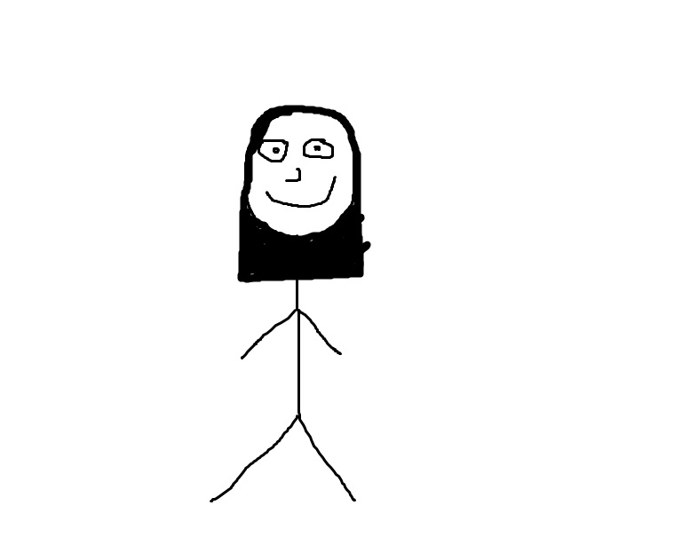
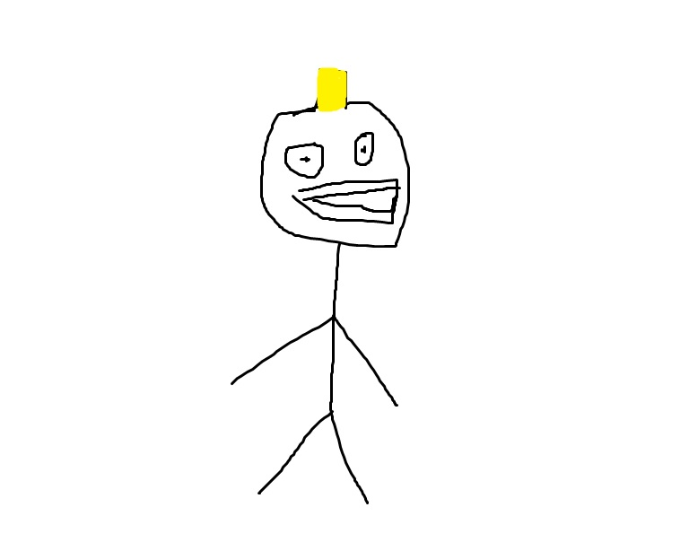

Jim Johnson is the lead drummer for Burnt Okra. He is 40 years old and currently resides in Urbandale, Iowa
with his wife and two kids. When he's not rocking, he enjoys spending time fishing and playing pick-up basketball. You can find Jim on Twitter: @Jimmyj.


Sandy Wagner is the lead guitarist for Burnt Okra. She is 37 years old and lives in Zearing, Iowa
with her husband and daughter Hailey. When she is not rocking, she enjoys spending her time riding motorcycles
or going to the park with Hailey. Want to see more in the life of a rocker and her child? Follow her on Instagram: @SandynHailey to see inside the life!

Ben Jeffery is the lead vocalist for Burnt Okra. He is 38 years old and lives in Ames, Iowa.
When he is not rocking he enjoys spending his time with his pet lizards and knitting. Ben even loves cuddling his lizards any chance he gets.